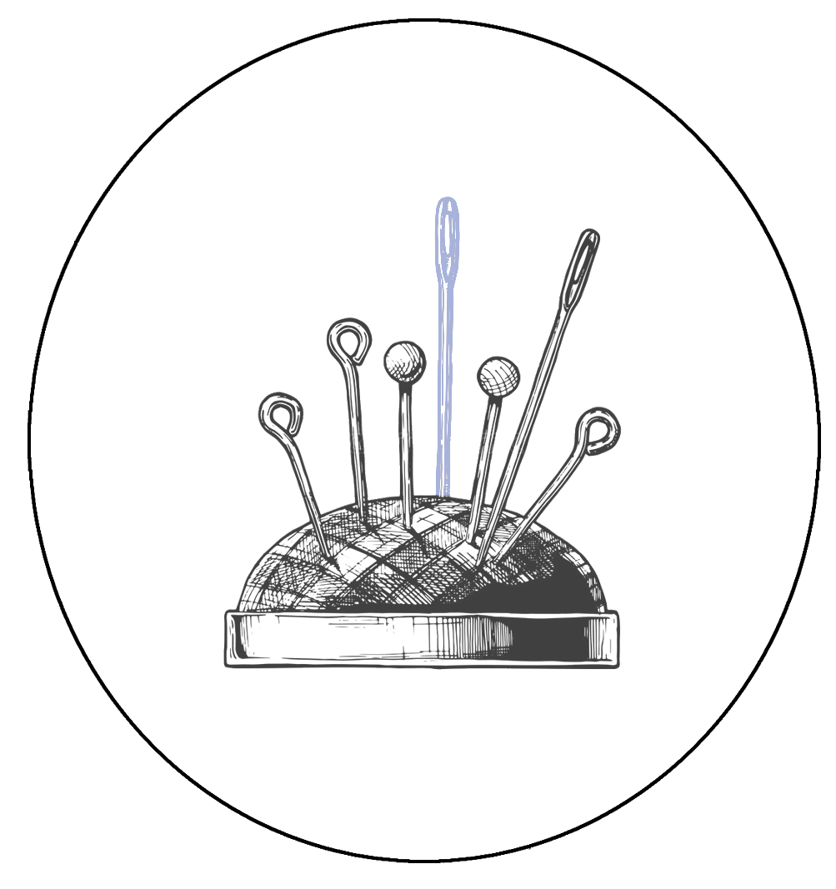

Acerico
Columnas y artículos
Libros y lecturas
- La topografía de la belleza
- Una ciudad, un libro y el gozo del disgusto
- Contratapa
- Informe de Moscú
- Viajar sin un rublo
Relatos y crónicas
- Lenguas ajenas
- Sobre el rigor cartográfico
- Aislamiento
- Las heridas del territorio
- Rita
- Sretenka 9
- Malas hierbas
Viñetas personales
Opinión
- La izquierda sin el comandante
- Eureka
- De pudores de creaciones
- Je suis Charlie
- Conservatorios
- En la dirección equivocada